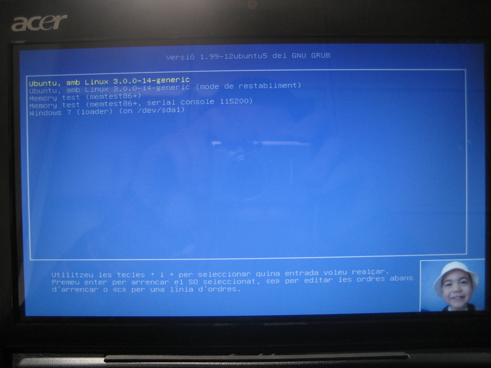

Procedure
Install the desktop-base package (if not already installed):
sudo aptitude install desktop-baseIf you reboot the system, the boot menu will show an ugly background. Right. We’ll change it!
First, we will prepare the image. Get a photo, search your albums, whatever will serve. We will consider the image as if it will reside on /shared/photos/myphoto.jpg. We will keep the grub version under the same directory and then link with it, so follow the next steps.
If your monitor ratio is 16:9, and the original photo is 4:3, you can run the following line in the terminal prompt:
cd /shared/photos
convert myphoto.jpg -resize 600x450 -gravity center -background Black -extent 800x450 myphoto-grub.pngBut, if your monitor is 16:10, you can run the next variation:
convert myphoto.jpg -resize 640x480 -gravity center -background Black -extent 768x480 myphoto-grub.pngAs you can see, I’ve used the convert command (from ImageMagick), resizing the image to an intermediate size and centering on to the final layout, making the left and right extra bands filled with black.
Adapt it to your needs: maybe the original image is 16:9 or 16:10 already, or your computer has a 4:3 monitor. In such cases, change the resize part and remove the rest of parameters.
Remember the bc command to make simple (or not so-simple) calculations:
$ echo "scale=10; 450*16/9" | bc
800In my case, I have a photo of one of my sons, and I want to put it bottom-right to the menu, bordered and filling with a similar color of its background:
convert joan.jpg -resize 120x90 -bordercolor White \
-border 1x1 -gravity SouthEast \
-background `convert joan.jpg -format "%[pixel:s.p{0,0}]" info:` \
-extent 800x450 joan_grub.pngFirst, I resize it to 120x90 (1/5 in the final image height, 4:3 ratio), I enclose it with a white border, and then put it to the bottom-right of the final extent of 800x450. For the background color, I use another convert execution, that extracts the rgb of the pixel at coordinates (0,0) of the original image. Suit yourself to adapt it to what you want.
In any case, you now have the image at a good (sufficient) resolution for the boot menu. We’ll reassign the link to that image.
By default, the image can be found as /usr/share/images/desktop-base/desktop-grub.png, but this is only a sym-link, so we’ll change the target:
cd /usr/share/images/desktop-base
sudo rm desktop-grub.png
sudo ls -s /shared/photos/myphoto-grub.png desktop-grub.pngAs you see, we destroy the original link and then recreate it with our own image path.
If you want to change the default text colors of the menu, edit the /usr/share/desktop-base/grub_background.sh script:
gksudo gedit /usr/share/desktop-base/grub_background.shYou can change the two color definition lines:
COLOR_NORMALdefines the normal color of the menu entries (foreground/background).COLOR_HIGHLIGHTdefines the foreground/background colors of the selected entry.
For example, I want to make the highlighted with yellow color, so I change only that line:
COLOR_HIGHLIGHT=yellow/blackWhen a background image is active, background color doesn’t work, so leave it black, as it doesn’t matter.
The color is specified according to RGB codes (“#c3e28a”) or common names (“light-blue”), and are found at theming grub …with lots of other interesting configuration parameters!!!
And finally, we re-run the update-grub script:
sudo update-grubAnd… voilà! Restart the system and enjoy!

Consider the fact that now your boot-menu background-image is redirected to the path you entered, so you can substitute with another (or edit the image with some image-editing tool), and rerun the update-grub script.
Easy, simple, direct, right?